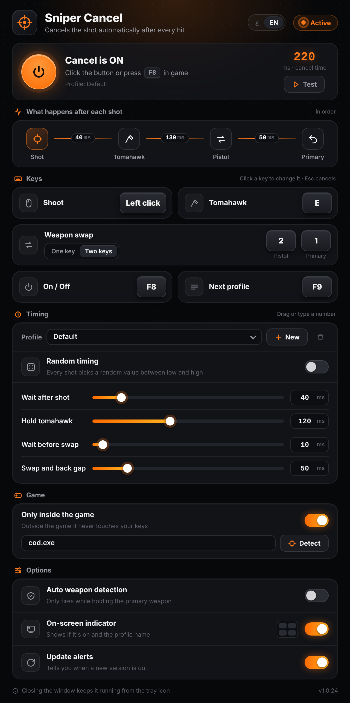
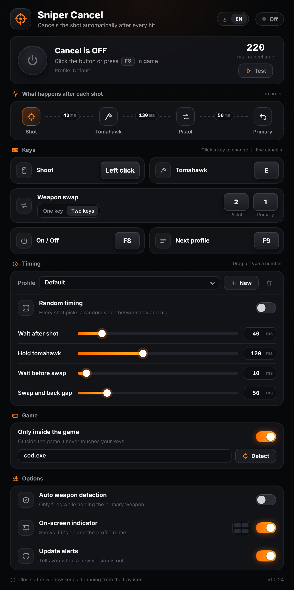

Every sniper shot, cancelled for you.
Sniper Cancel is a tiny Windows app that does the quick-swap after every shot: it grabs the tomahawk, swaps to your pistol and straight back to the sniper. Only keyboard presses, no hacks, no memory reading.

See it in one minute
A short walkthrough: setting your keys, tuning the timing and turning it on in game.
What happens after each shot
You shoot like normal. The moment you fire, the app plays this short key sequence for you, faster and more consistent than your fingers.
(left click)
tomahawk key
cancels the throw
to the sniper
Small app, everything you need
Built to stay out of your way. It sits in the tray, uses almost nothing, and only acts inside the game.
It just presses the keys you choose. No injection, no memory reading, nothing touches the game files.
Press F8 in game to toggle. A high beep means on, a low beep means off.
No background loops. Idle CPU is 0% and memory is about 4 MB. Key hooks only run while it is on.
Outside the game it never touches your keys. Use Detect to pick the game window in five seconds.
Save a profile per sniper and switch between them with F9.
Give each delay a low and high value. Every shot picks a new value in between, so it never repeats exactly.
A small badge in a corner of the screen shows if it is on and which profile is active.
When a new version is out the app tells you, and one button downloads and restarts it.
Switch the app language with one tap. Your keys and settings are saved and come back every time.
Ready in five steps
Nothing to install. Download, run, set your keys once and they are remembered.
Get SniperCancel.exe and open it. If Windows SmartScreen shows a warning, click "More info" then "Run anyway".
Click a key box, then press the key you want. Esc cancels. Use the same keys you use in the game settings.
"Two keys" (recommended) presses Pistol then Primary. Match them to your "Primary weapon" and "Secondary weapon" keys in game.
Drag the sliders or type a number in milliseconds. Press Test: it counts down 3 seconds then runs the sequence once.
Press F8. You hear a high beep when it turns on. Closing the window keeps it running in the tray.
The four delays, explained
All values are in milliseconds (0 to 1000). The app keeps them accurate to about 1 ms. These are good starting points; adjust for your connection and weapon.
Time from your shot until the tomahawk key goes down. Too low and the shot may not register.
40msHow long the tomahawk key is held. If it is too short the game ignores it, around 120 ms works well.
120msExtra wait before the pistol key. Hold + this wait is the time from tomahawk to swap.
10msTime between the pistol key and the primary key.
50msOff and on
The big power button glows orange when the cancel is active.

Questions
Is this a hack or a cheat?
No. It does not read or change game memory and does not touch game files. It only sends normal key presses, the same ones you could press yourself, just with exact timing.
Can I get banned for using it?
Any program that presses keys for you can be treated as a rule break by a game's anti-cheat, so there is always a risk. Use it at your own risk.
It does nothing in game. What should I check?
Make sure it is on (F8, high beep). If "Only inside the game" is on, click Detect and switch to the game within 5 seconds so it learns the game window. Also check your swap keys match the game's weapon keys.
I end up stuck on the pistol.
Use "Two keys" swap mode and set Pistol and Primary to the game's Secondary and Primary weapon keys. The app presses Primary again after 150 ms to make sure you come back.
The tomahawk gets thrown instead of cancelled.
Your hold time is probably too short or the swap comes too late. Raise "Hold tomahawk" to around 120 ms and keep "Wait before swap" small.
I can't see the on-screen indicator.
It can't draw over exclusive full screen. Set the game to borderless window mode.
How do I close it completely?
Closing the window keeps it running in the tray next to the clock. Right-click the tray icon and choose Exit.
How do I update?
When a new version is out, a banner appears at the top of the app. Click "Update now" and it downloads the new version and restarts by itself.
Get Sniper Cancel
One small file for Windows 10 and 11. Free and open source.
Download SniperCancel.exeSniper Cancel is a fan-made tool and is not affiliated with any game publisher. Automated key presses may break a game's terms of service. Use at your own risk.